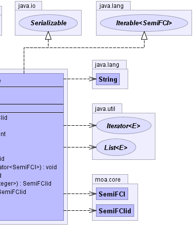

public class FCITable extends java.lang.Object implements java.lang.Iterable<SemiFCI>, java.io.Serializable
|  |
| Modifier and Type | Class and Description |
|---|---|
protected class |
FCITable.FCIArray |
| Constructor and Description |
|---|
FCITable()
Default constructor.
|
| Modifier and Type | Method and Description |
|---|---|
SemiFCIid |
addSemiFCI(SemiFCI itemset)
Add an itemset to the FCITable and returns the assigned ID
|
void |
clearNewItemsetsTable()
Prepare the table to be able to process the next segment
|
int |
computeK(SemiFCIid id,
int[] supVector,
int startK)
Passed a semiFCI id, computes the maximum k (>k1) for which the support greater
than the corresponding value in the minimum support vector.
|
SemiFCI |
getFCI(SemiFCIid id)
Returns the instance of the semiFCI associated to the passed id.
|
java.util.Iterator<SemiFCI> |
iterator()
Provides a size descending iterator of the semiFCIs stored in the table
at the moment.
|
void |
removeSemiFCI(SemiFCIid id)
Removes a semiFCI from the table given the corresponding ID.
|
void |
removeSemiFCI(SemiFCIid id,
java.util.Iterator<SemiFCI> iter)
Removes a semiFCI from the table given the corresponding ID (via iterator).
|
SemiFCIid |
select(java.util.List<java.lang.Integer> itemset)
Returns the ID in the FCI table of the passed itemset (-1 if no entry is found)
|
SemiFCIid |
selectSFS(java.util.List<java.lang.Integer> subSetItemset,
java.util.List<java.lang.Integer> superSetItemset) |
SemiFCIid |
selectSFS(SemiFCI fci,
boolean checkSupport)
Returns the ID of the Smallest semiFCI Superset of the passed itemset
|
int |
size()
Size of the FCITable
|
java.lang.String |
toString() |
public FCITable()
public SemiFCIid addSemiFCI(SemiFCI itemset)
itemset - itemset to be added to the tablepublic void removeSemiFCI(SemiFCIid id)
id - id of the semiFCI to be removedpublic void removeSemiFCI(SemiFCIid id, java.util.Iterator<SemiFCI> iter)
id - id of the semiFCI to be removedpublic SemiFCI getFCI(SemiFCIid id)
id - id of the semiFCIpublic int computeK(SemiFCIid id, int[] supVector, int startK)
id - id of the semiFCIsupVector - minimum support vectork1 - starting value for kpublic SemiFCIid select(java.util.List<java.lang.Integer> itemset)
itemset - itemset to be selectedpublic SemiFCIid selectSFS(SemiFCI fci, boolean checkSupport)
itemset - itemeset to be selectedpublic SemiFCIid selectSFS(java.util.List<java.lang.Integer> subSetItemset, java.util.List<java.lang.Integer> superSetItemset)
public void clearNewItemsetsTable()
public int size()
public java.lang.String toString()
toString in class java.lang.Object